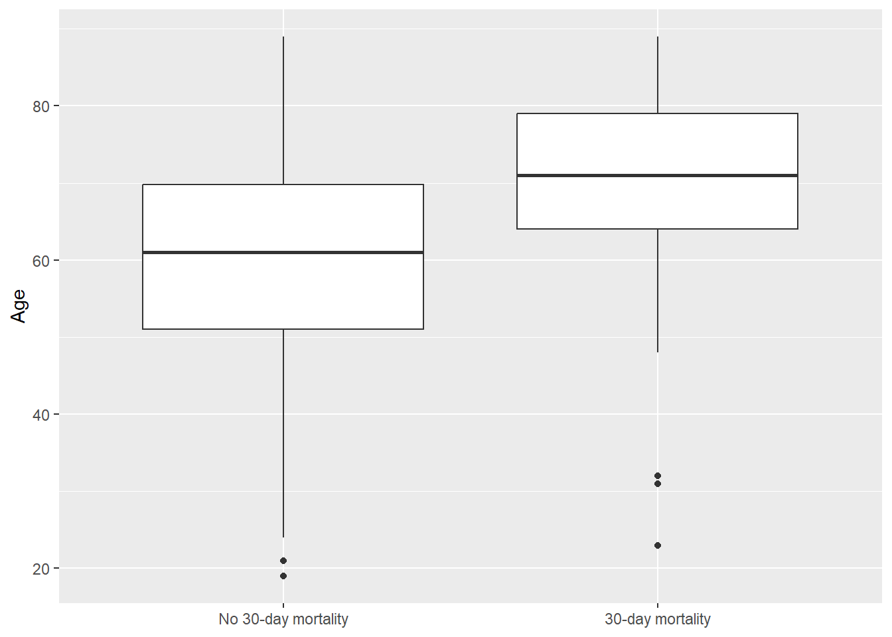

Exercise 2 Solutions: Polish the QCRC Report
Instructor note
This solution continues the Exercise 1 QCRC report. It is an exemplar structure, not the only valid student answer.
Task 1 solution: Re-render and triage
Example Day 2 triage list:
- Reproducibility fix: move data loading and recoding into a named function.
- Analysis fix: report both crude and adjusted logistic models for 30-day mortality.
- Formatting fix: replace raw model output with a compact odds-ratio table and add captions.
Task 2 solution: Reusable data loading
Code
to_numeric <- function(x) {
as.numeric(dplyr::na_if(as.character(x), "."))
}
read_qcrc_main <- function(path = here::here("data", "QCRC_FINAL_Deidentified.xlsx")) {
readxl::read_xlsx(path, sheet = "Main_Dataset") |>
janitor::clean_names() |>
dplyr::mutate(
bmi = to_numeric(bmi),
crp = to_numeric(crp),
d_dimer = to_numeric(d_dimer),
vent_los = to_numeric(vent_los),
x30d_mortality = factor(
x30d_mortality,
levels = c(0, 1),
labels = c("No 30-day mortality", "30-day mortality")
),
died = factor(died, levels = c(0, 1), labels = c("Survived", "Died")),
intubated = factor(intubated, levels = c(0, 1), labels = c("No", "Yes")),
remdesivir_or_placebo = factor(
remdesivir_or_placebo,
levels = c(0, 1),
labels = c("Placebo", "Remdesivir")
),
female = factor(female),
race = factor(race)
)
}
qcrc <- read_qcrc_main()Example Methods sentence:
We used a report-local helper function to read the QCRC main sheet, clean variable names, convert selected character variables to numeric values, and recode binary variables for analysis and reporting.
Task 3 solution: Workbook inventory
Code
data_file <- here::here("data", "QCRC_FINAL_Deidentified.xlsx")
sheet_names <- readxl::excel_sheets(data_file)
sheet_list <- lapply(sheet_names, \(s) readxl::read_xlsx(data_file, sheet = s))
workbook_inventory <- data.frame(
sheet = sheet_names,
rows = sapply(sheet_list, nrow),
columns = sapply(sheet_list, ncol)
)
workbook_inventory |>
knitr::kable(caption = "QCRC workbook inventory.")| sheet | rows | columns |
|---|---|---|
| Main_Dataset | 288 | 37 |
| Oxygen_Delivery | 42606 | 6 |
| SOFA | 288 | 8 |
| Long_Labs | 15919 | 29 |
| Long_Vitals | 143220 | 11 |
| Static_Compliance | 18281 | 11 |
| PAO2_FIO2 | 5252 | 5 |
| ICU_Meds | 869554 | 7 |
| Intake_Form | 288 | 71 |
| Daily_Form | 3612 | 36 |
Task 4 solution: Analysis table and figure
Code
qcrc |>
dplyr::group_by(x30d_mortality) |>
dplyr::summarise(
n = dplyr::n(),
mean_age = round(mean(age, na.rm = TRUE), 1),
median_icu_los = round(median(icu_los, na.rm = TRUE), 1),
mean_bmi = round(mean(bmi, na.rm = TRUE), 1),
intubated_percent = round(mean(intubated == "Yes", na.rm = TRUE) * 100, 1),
remdesivir_percent = round(
mean(remdesivir_or_placebo == "Remdesivir", na.rm = TRUE) * 100,
1
),
.groups = "drop"
) |>
knitr::kable(caption = "Selected characteristics by 30-day mortality status.")| x30d_mortality | n | mean_age | median_icu_los | mean_bmi | intubated_percent | remdesivir_percent |
|---|---|---|---|---|---|---|
| No 30-day mortality | 194 | 60.1 | 8 | 33.1 | 68.6 | 20.1 |
| 30-day mortality | 94 | 70.4 | 9 | 28.5 | 84.0 | 10.6 |
Code

Example interpretation:
The descriptive table and age figure help establish the sample context before adjusted modeling. Differences in descriptive summaries should not be treated as adjusted effects.
Task 5 solution: Crude and adjusted models
Code
Call:
glm(formula = x30d_mortality ~ intubated + age + bmi + remdesivir_or_placebo,
family = binomial, data = qcrc)
Coefficients:
Estimate Std. Error z value Pr(>|z|)
(Intercept) -2.31314 1.19892 -1.929 0.05369 .
intubatedYes 1.46234 0.37355 3.915 9.05e-05 ***
age 0.04436 0.01114 3.983 6.81e-05 ***
bmi -0.07458 0.02301 -3.242 0.00119 **
remdesivir_or_placeboRemdesivir -1.04033 0.41672 -2.496 0.01254 *
---
Signif. codes: 0 '***' 0.001 '**' 0.01 '*' 0.05 '.' 0.1 ' ' 1
(Dispersion parameter for binomial family taken to be 1)
Null deviance: 361.41 on 284 degrees of freedom
Residual deviance: 300.08 on 280 degrees of freedom
(3 observations deleted due to missingness)
AIC: 310.08
Number of Fisher Scoring iterations: 5Code
tidy_or <- function(model) {
out <- data.frame(
term = names(coef(model)),
odds_ratio = exp(coef(model)),
exp(confint.default(model)),
check.names = FALSE
)
names(out) <- c("term", "odds_ratio", "conf_low", "conf_high")
out |>
dplyr::mutate(dplyr::across(where(is.numeric), \(x) round(x, 2)))
}
dplyr::bind_rows(
dplyr::mutate(tidy_or(crude_model), model = "Crude"),
dplyr::mutate(tidy_or(adjusted_model), model = "Adjusted")
) |>
dplyr::select(model, term, odds_ratio, conf_low, conf_high) |>
knitr::kable(caption = "Crude and adjusted odds ratios for 30-day mortality.")| model | term | odds_ratio | conf_low | conf_high | |
|---|---|---|---|---|---|
| (Intercept)…1 | Crude | (Intercept) | 0.25 | 0.14 | 0.43 |
| intubatedYes…2 | Crude | intubatedYes | 2.42 | 1.29 | 4.53 |
| (Intercept)…3 | Adjusted | (Intercept) | 0.10 | 0.01 | 1.04 |
| intubatedYes…4 | Adjusted | intubatedYes | 4.32 | 2.08 | 8.98 |
| age | Adjusted | age | 1.05 | 1.02 | 1.07 |
| bmi | Adjusted | bmi | 0.93 | 0.89 | 0.97 |
| remdesivir_or_placeboRemdesivir | Adjusted | remdesivir_or_placeboRemdesivir | 0.35 | 0.16 | 0.80 |
Example Results paragraph:
In the crude model, intubation was associated with higher odds of 30-day mortality. After adjustment for age, BMI, and treatment group, the association remained positive, although the exact estimate and confidence interval should be interpreted in light of missingness, variable coding, and the limited scope of this course exercise.
Task 6 solution: Polished deliverable
Expected final report structure:
- Title: specific and outcome-oriented.
- Introduction: question, rationale, and hypothesis.
- Methods: data source, cleaning, descriptive analysis, model formula, and uncertainty approach.
- Results: table, figure, model table, and short interpretation.
- Discussion: main finding, practical meaning, limitation, and next step.
- Appendix: workbook inventory and exploratory checks.
Advanced task solution outlines
- Model comparison: fit two nested models, then compare with
AIC(model1, model2)oranova(model1, model2, test = "Chisq"); remind students this does not choose confounders causally. - Predictions: create a small
newdatagrid and callpredict(model, newdata, type = "response", se.fit = TRUE); report predicted probabilities. - Sensitivity analysis: repeat crude and adjusted models with
diedor recodedx60d_mortality; compare direction and rough magnitude. - Non-main sheet: inspect row level, identify a stable patient identifier, summarize to one row per patient before joining, and document any exclusions.
- Bibliography: add a
bibliography:field in YAML and cite at least one source in the Introduction or Discussion. - Bootstrap: resample rows with replacement, refit the same model many times, collect the coefficient of interest, and summarize percentile intervals.